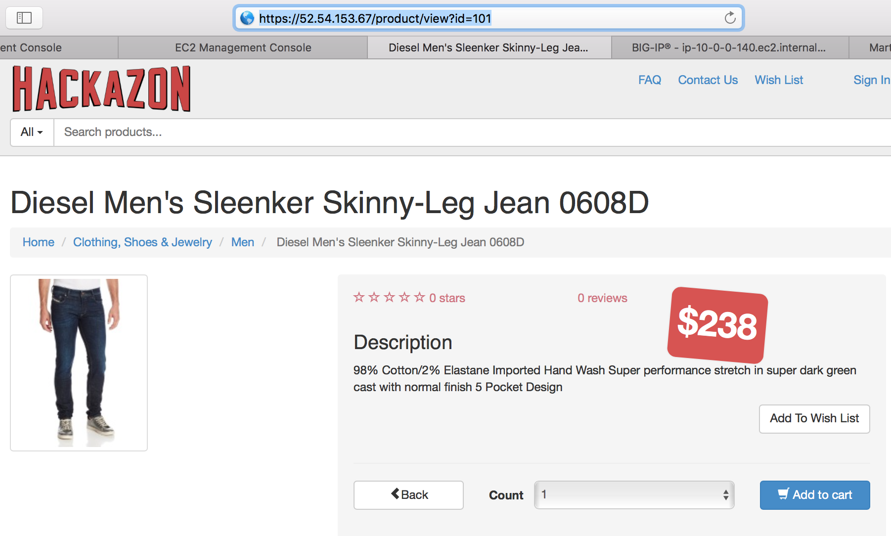
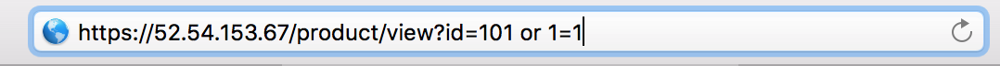
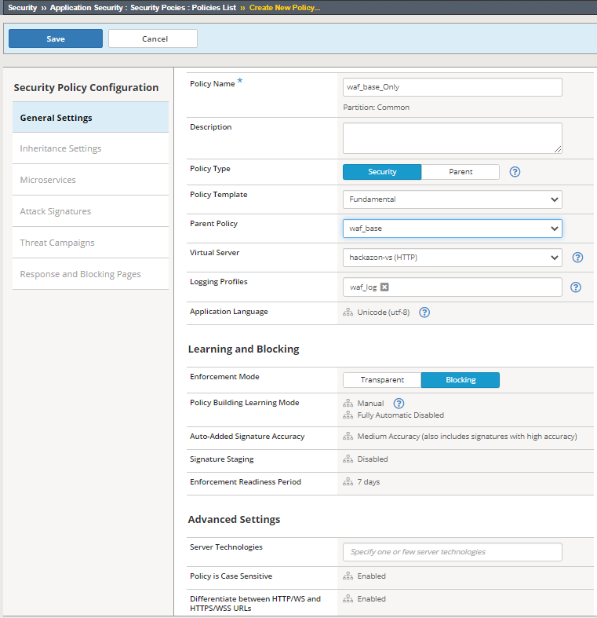
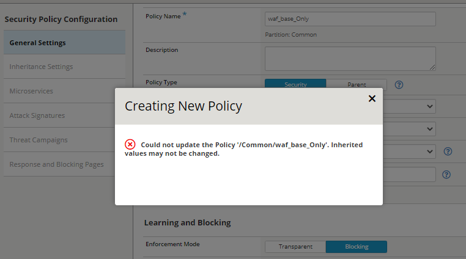
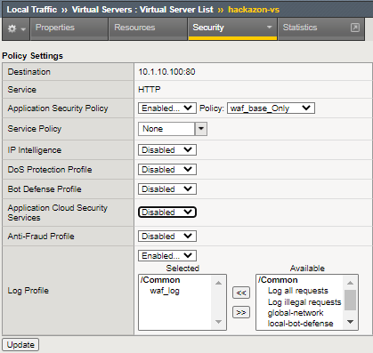
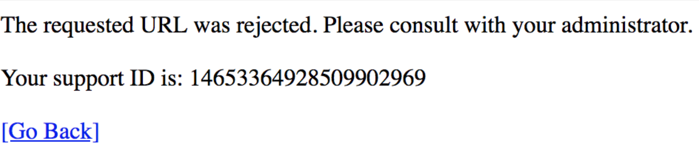
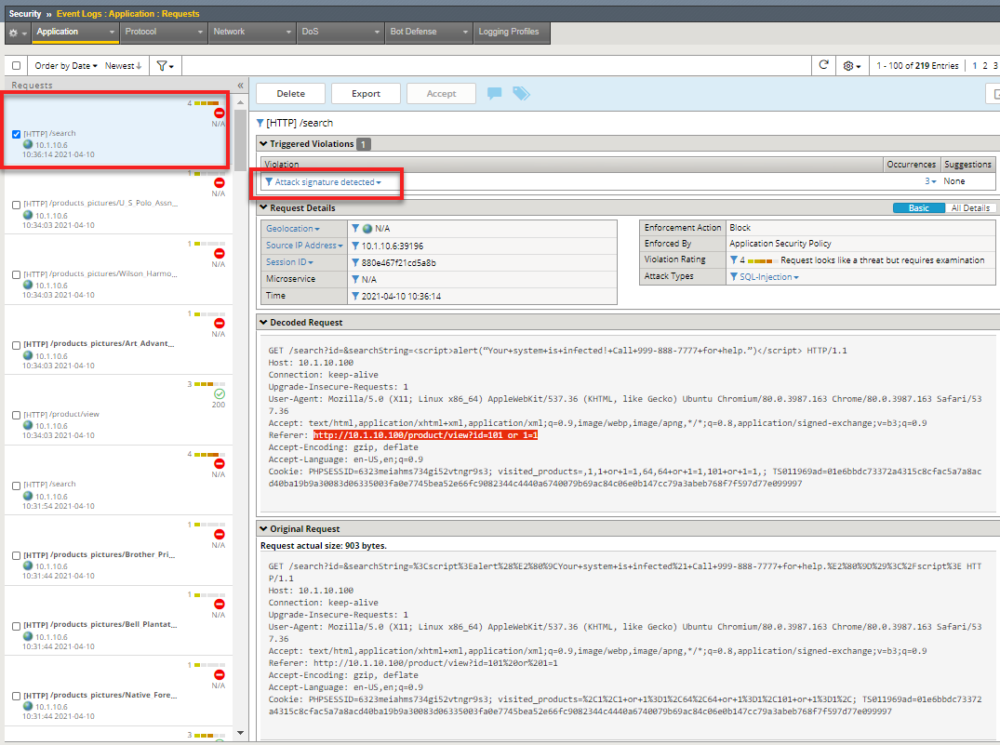

WAF - Identifying the level of protection required for applications > WAF - Identifying the level of protection required for applications Source |
Create Base WAF Child Policy¶
In this section you will create child profile based on the parent profile waf_base without any additional customizations. This would be consistent with setting a base profile that could be used across multiple applications in your environment.
Task 1 - Simulate attacks to demonstrate common web app vulnerabilities.
You are going to open a browser window and simulate attacks against the, as of yet, unprotected Hackazon application. You have two options for logging into the ubu-jumpbox, one is Microsoft Remote Desktop, XRDP, the other is CONSOLE which opens up the Linux GUI in a new browser window/tab.
You only access to a browser running on the jumpbox, the suggested method for this task is to use the CONSOLE access method.
Choose Your access method and at the login, select f5student as the user and use f5UDFrocks! as the password.
Select Applications in the upper left-hand corner and from the drop-down menu select Internet and then Chromium Web Browser.
Open browser and go to http://<f5student#-ext-pip0> to access the Hackazon website
Under Special selection click on any sale item displayed
Note the product id in the browser address bar
In the browser address bar append or 1=1 then press Enter
Note
This is a common sql injection attack and although this did not return anything exciting the search request was accepted and processed with response.
In the Search field enter <script>alert("Your system is infected! Call 999-888-7777 for help.")</script> and press Enter
Note
This is a common Cross-site scripting (XSS) attack and although this did not return anything exciting the search request was accepted and processed with response.
Also some modern versions of browsers will block this request from displaying a response, but the request was actually sent to the application. If Chrome blocks it you can try on another browser.
{kind=link}
{kind=link}
Task 2 - Create new waf policy to mitigate the vulnerabilities using info on table below:
| Policy Name | waf_baseOnly |
| Policy Type | Security |
| Parent Policy | waf_base |
| Virtual Server | hackazon_vs |
| Logging Profiles | waf_log |
| Enforcement Mode | Blocking |
- Select the Security->Application Security->Security Policies->Policies List page
- Click Create New Policy
- For Policy Name enter waf_base_Only
- For Policy Type select Security
- For Parent Policy enter waf_base
- You will get a warning noting select a parent policy may change other settings. Review the setting selections and then select OK to accept warning.
Note
You will note that many of the selections are now greyed out because those selections are based on the parent policy.
For Virtual Server select hackazon_vs
For Logging Profiles select waf_log.
Change Enforcement Mode to Blocking
Click Save in the upper left to save your new policy.
{kind=link}
Whoops! It seems that we ran into an issue. Go to https://askf5.com and enter the basic error message Could not update the Policy. Inherited values may not be changed. into the search box.
{kind=link}
As you look at the results you should find Bug ID 986937: Cannot create child policy when the signature staging setting is not equal in template and parent policy. Open the Bug ID https://cdn.f5.com/product/ bugtracker/ID986937.html and check the bug Conditions and Workaround.
Note
Staging is used to watch new policy changes, like updated signatures, in transparent mode for a defined period of time and will alarm and log, but not block violations. This allows the WAF administrator time to determine if the new signatures are creating false positives. In most circumstances you would not disable signature staging. While the lab could have been modified to avoid you seeing the bug we felt this was a good learning experience and a way for you to see bug tracker.
Let's implement the workaround by removing the parent policy. Click Save in the upper left to save your new policy.
Under Security Policy Configuration on the left select Inheritance Settings
Next to Parent Policy click on the drop-down menu and select waf_base, then select Save on the upper right. You will now see the Inheritance Settings.
Select General Settings on the left and you will see most selections are now greyed out as the parent policy controls these security features.
Note
As you can now see, parent profiles can be used to change existing profiles.
Note
This creates a child security policy which inherits the settings from the waf_base Parent Policy. The parent policy settings was created using Rapid Deployment Template which includes several common security measures and uses Server Technologies for attack signatures (see Manual Chapter - Adding Server Technologies to a Policy for more information). Signature Staging is Disabled for this lab demo but it is enabled by default and should be enabled for production environments.
Task 3 - Test WAF policy.
Now let's review the security policies on our virtual server and test our new WAF policy.
Select the Local Traffic->Virtual Servers->Virtual Servers List page
Click the hackazon_vs to display Virtual Server Properties
Click the Security->Policies tab to display Policy Settings
In the Log Profile ensure waf_log profile is selected
Select update
Open browser and go to http://<f5student#-ext-pip0>/product/view?id=101 or 1=1. You should receive a block message similar to below. Take note of the Support ID number.
Return to hackazon main page
In the Search field type <script>alert("Your system is infected! Call 999-888-7777 for help.")</script> and press Enter. You should see a similar block message. Take note of the Support ID number.
{kind=link}
{kind=link}
Task 4 - Review WAF event logs on BIG-IP GUI.
Select the Security->Event Logs->Application->Requests page
Select the Event with the matching Support ID noted on the block pages
Note
You can view the "Decoded Requests" and the "Original Request" however the "Response" is not captured by default.
{kind=link}